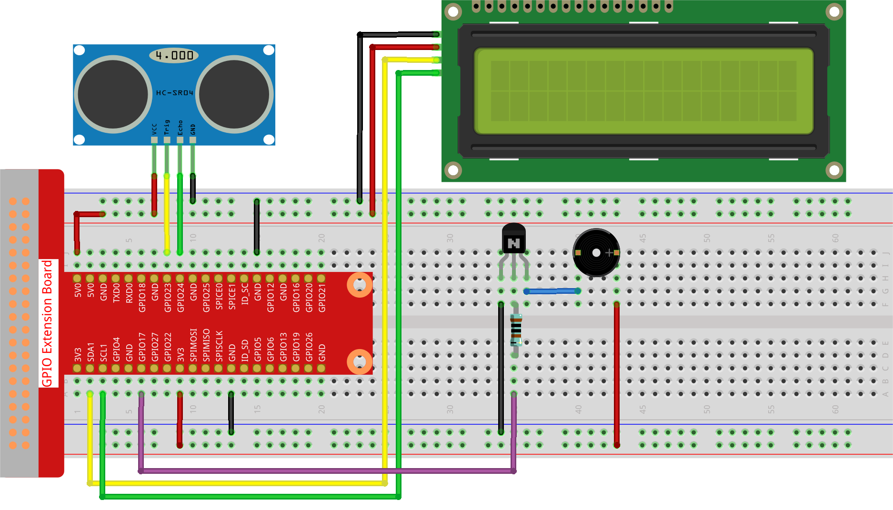

注釈
こんにちは、SunFounderのRaspberry Pi & Arduino & ESP32愛好家コミュニティへようこそ！Facebook上でRaspberry Pi、Arduino、ESP32についてもっと深く掘り下げ、他の愛好家と交流しましょう。
参加する理由は？
エキスパートサポート：コミュニティやチームの助けを借りて、販売後の問題や技術的な課題を解決します。
学び＆共有：ヒントやチュートリアルを交換してスキルを向上させましょう。
独占的なプレビュー：新製品の発表や先行プレビューに早期アクセスしましょう。
特別割引：最新製品の独占割引をお楽しみください。
祭りのプロモーションとギフト：ギフトや祝日のプロモーションに参加しましょう。
👉 私たちと一緒に探索し、創造する準備はできていますか？[ここ]をクリックして今すぐ参加しましょう！
3.1.3 リバースアラーム
はじめに
このプロジェクトでは、LCD、ブザー、超音波センサーを使用して、リバースアシストシステムを作成します。これをリモートコントロール車に取り付けて、車をガレージにバックさせる実際のプロセスをシミュレートできます。
必要な部品
このプロジェクトには、以下の部品が必要です。

回路図
超音波センサーは、障害物との距離をコードの形でLCDに表示します。同時に、超音波センサーは異なる距離値に応じてブザーから警告音を出力します。

実験手順
ステップ1: 回路を組み立てます。
ステップ2: ディレクトリを変更します。
cd ~/davinci-kit-for-raspberry-pi/python-pi5
ステップ3: 実行します。
sudo python3 3.1.3_ReversingAlarm.py
このコードを実行すると、超音波センサーモジュールが障害物までの距離を検出し、その距離情報をLCD1602に表示し、同時にブザーから距離に応じて周波数が変化する警告音が鳴ります。
注釈
FileNotFoundError: [Errno 2] No such file or directory: '/dev/i2c-1'エラーが発生した場合は、I2Cを有効にするために I2C設定 を参照してください。ModuleNotFoundError: No module named 'smbus2'エラーが表示された場合は、sudo pip3 install smbus2を実行してください。エラー
OSError: [Errno 121] Remote I/O errorが表示された場合、モジュールの接続が誤っているか、モジュールが壊れていることを意味します。コードと配線は正常ですが、LCDにコンテンツが表示されない場合は、バックのポテンショメーターを回してコントラストを増加させることができます。
警告
エラー メッセージ RuntimeError: Cannot determine SOC peripheral base address が表示された場合は、 「gpiozero」が動作しない場合。 を参照してください。
コード
注釈
以下のコードを 変更/リセット/コピー/実行/停止 することができます。ただし、変更する前に davinci-kit-for-raspberry-pi/python-pi5 のようなソースコードのパスに移動する必要があります。コードを変更した後、効果を確認するために直接実行できます。
#!/usr/bin/env python3
import LCD1602
import time
from gpiozero import DistanceSensor, Buzzer
# GPIOピンとともに超音波センサーを初期化します
sensor = DistanceSensor(echo=24, trigger=23) # EchoピンはGPIO 24、TriggerピンはGPIO 23です
# GPIOピン17に接続されたブザーを初期化します
buzzer = Buzzer(17)
def lcdsetup():
# I2Cアドレスとバックライトを有効にしてLCDを初期化します
LCD1602.init(0x27, 1) # 0x27はLCDのI2Cアドレスです
LCD1602.clear() # LCDディスプレイをクリアします
# LCDに起動メッセージを表示します
LCD1602.write(0, 0, '超音波センサー起動中')
LCD1602.write(1, 1, 'SunFounder製')
time.sleep(2) # 2秒待機します
def distance():
# センサーによって測定された距離を計算して返します
dis = sensor.distance * 100 # 距離をセンチメートルに変換します
print('距離: {:.2f} cm'.format(dis)) # 小数点以下2桁の距離を表示します
time.sleep(0.3) # 次の測定まで0.3秒待機します
return dis
def loop():
# 距離を連続して測定し、LCDとブザーを更新します
while True:
dis = distance() # 現在の距離を取得します
# 距離に基づいて距離を表示し、アラートを処理します
if dis > 400: # 距離が範囲外かどうかをチェックします
LCD1602.clear()
LCD1602.write(0, 0, 'エラー')
LCD1602.write(3, 1, '範囲外')
time.sleep(0.5)
else:
# LCDに現在の距離を表示します
LCD1602.clear()
LCD1602.write(0, 0, '距離:')
LCD1602.write(5, 1, str(round(dis, 2)) + ' cm')
# 距離に基づいてブザーの周波数を調整します
if dis >= 50:
time.sleep(0.5)
elif 20 < dis < 50:
# 中距離：中程度のブザー周波数
for _ in range(2):
buzzer.on()
time.sleep(0.05)
buzzer.off()
time.sleep(0.2)
elif dis <= 20:
# 近距離：高いブザー周波数
for _ in range(5):
buzzer.on()
time.sleep(0.05)
buzzer.off()
time.sleep(0.05)
try:
lcdsetup() # LCDディスプレイをセットアップ
loop() # 測定ループを開始
except KeyboardInterrupt:
# ユーザーによる割り込み（例：Ctrl+C）でブザーをオフにしてLCDをクリアします
buzzer.off()
LCD1602.clear()
コードの説明
このスクリプトでは、さまざまなライブラリを機能に活用しています。
LCD1602ライブラリはLCDディスプレイを管理し、timeは時間に関連する機能を提供します。gpiozeroライブラリは、Raspberry PiのGPIOピン操作に必要であり、特にDistanceSensorとBuzzerの操作に使用されます。#!/usr/bin/env python3 import LCD1602 import time from gpiozero import DistanceSensor, Buzzer
超音波センサーは、エコーとトリガーピンがそれぞれGPIOピン24と23に接続されてセットアップされています。さらに、ブザーはGPIOピン17に接続されています。
# GPIOピンで超音波センサーを初期化 sensor = DistanceSensor(echo=24, trigger=23) # エコーピンはGPIO 24、トリガーピンはGPIO 23です # GPIOピン17に接続されたブザーを初期化 buzzer = Buzzer(17)
LCDディスプレイの初期化では、クリアしてから起動メッセージを表示する手順が含まれています。
def lcdsetup(): # I2Cアドレスとバックライトを有効にしてLCDを初期化 LCD1602.init(0x27, 1) # 0x27はLCDのI2Cアドレスです LCD1602.clear() # LCDディスプレイをクリア # LCD上に起動メッセージを表示 LCD1602.write(0, 0, 'Ultrasonic Starting') LCD1602.write(1, 1, 'By SunFounder') time.sleep(2) # 2秒待機
distance関数は超音波センサーによって測定された距離を計算し、センチメートル単位で値を返します。def distance(): # センサーによって測定された距離を計算して返す dis = sensor.distance * 100 # 距離をセンチメートルに変換 print('Distance: {:.2f} cm'.format(dis)) # 距離を小数点以下2桁で表示 time.sleep(0.3) # 次の測定前に0.3秒待機 return dis
メインループは距離を連続的に測定し、LCDとブザーの両方を更新します。測定された距離に基づいて異なる距離範囲を処理し、エラーメッセージを表示したり、測定された距離に基づいてブザーの周波数を変更したりします。
def loop(): # 距離を連続的に測定し、LCDとブザーを更新 while True: dis = distance() # 現在の距離を取得 # 距離に基づいてアラートを表示し、処理 if dis > 400: # 距離が範囲外かどうかをチェック LCD1602.clear() LCD1602.write(0, 0, 'Error') LCD1602.write(3, 1, 'Out of range') time.sleep(0.5) else: # LCD上に現在の距離を表示 LCD1602.clear() LCD1602.write(0, 0, 'Distance is') LCD1602.write(5, 1, str(round(dis, 2)) + ' cm') # 距離に基づいてブザーの周波数を調整 if dis >= 50: time.sleep(0.5) elif 20 < dis < 50: # 中距離：中程度のブザーの周波数 for _ in range(2): buzzer.on() time.sleep(0.05) buzzer.off() time.sleep(0.2) elif dis <= 20: # 近距離：高いブザーの周波数 for _ in range(5): buzzer.on() time.sleep(0.05) buzzer.off() time.sleep(0.05)
実行時、スクリプトはLCDをセットアップし、メインループに入ります。キーボードコマンド（Ctrl+C）で割り込みが発生すると、ブザーがオフになり、LCDがクリアされます。
try: lcdsetup() # LCDディスプレイのセットアップ loop() # 測定ループの開始 except KeyboardInterrupt: # ユーザー割り込み（Ctrl+Cなど）でブザーをオフにし、LCDをクリア buzzer.off() LCD1602.clear()